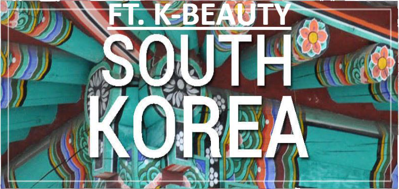
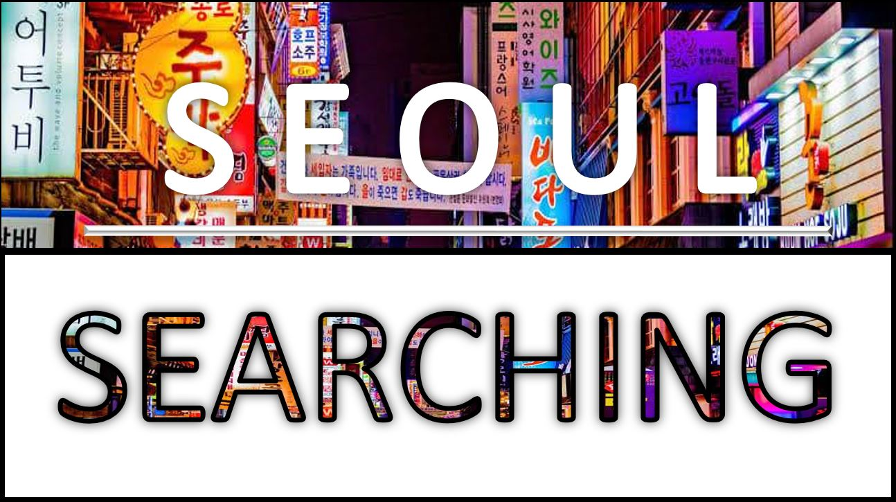
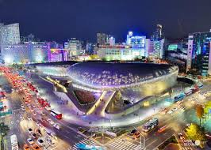
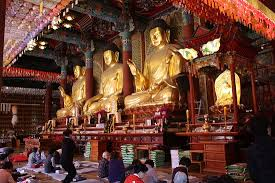
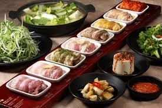
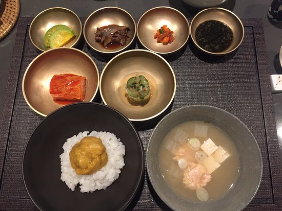

Ready your passports and visa as you are to experience Korea’s Beauty and one of the most progressive country in South East Asia.
South Korea has a rich culture, and you need to go a long way from Seoul to encounter it. Likewise, it is very famous for being home to the greatest K-pop names, Korean bar-b-que eateries, plastic medical procedure, well known make-up brands it's gotten one of Asia's most visited goals for sightseers. Also, it is acclaimed for some reasons. It is viewed as the recorded focus of the nation, as per the Seoul Metropolitan Government. The city was recently called Hanyang and Gyeongseongbu, at that point renamed Seoul in 1945, when it was liberated from Japanese occupation.

Soul searching at Seoul, South Korea’s remarkable landmark.
REASONS TO VISIT SEOUL?
•It is the historical center of South Korea
•The modern and advancing features
•Nature’s Beauty
•The Food and delicacies
•The notable attractions of futuristic Dongdaemun Design Plaza, Gyeongbokgung Palace and Jogyesa Temple
•It is the historical center of South Korea
•The modern and advancing features
•Nature’s Beauty
•The Food and delicacies
•The notable attractions of futuristic Dongdaemun Design Plaza, Gyeongbokgung Palace and Jogyesa Temple

Dongdaemun Design Plaza
Dongdaemun Design Plaza

Gyeongbokgung Palace

Jogyesa Temple
Jogyesa Temple

Palsaik Samgyeopsal
Palsaik Samgyeopsal

Tosokchon Samgyetang

Gaon Restaurant
Gaon Restaurant
REFERENCES